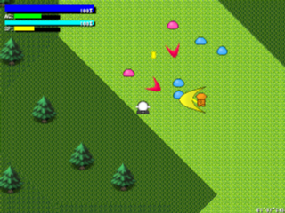

旧コンテンツ一覧
[ツール(ブラウザ/Android)]QRFileShare
公開終了
QRコードを使ってファイルの送受信を行うツール
[アプリ(Android)]MobileXRChat
公開終了 /
GitHub
Androidスマホ1台と対応ゴーグルで、XR(VR・MR・AR)対応のアバターチャットを行うことが出来るアプリ
「DMM VR Connect」に登録したVRMアバターを使用できました
[ツール(Android)]かすれ声チェンジャー
公開終了
かすれ声を普通の声にリアルタイムで修復（変換）するアプリ
ボイスチェンジャー機能付き
[ツール(Windows)]NarikiriVC
音声を加工するボイスチェンジャー
ベースとなる人物の音声を指定し、その音声に近づくように加工するのが特徴
[アプリ(Android)]VRUnityChanViewer(6DoF対応版)
6DoF VR対応Unityちゃんモーションビューアー
ARCoreを使うことで6DoFをスマホ上で再現しました
[ゲーム(Android)]Miracle Cards
公開終了
ＡＲ（拡張現実）の対戦カードゲーム（インターネット対戦可能）
[ツール(Ubuntu)]HTS_installer
詳細ページ
Open JTalkなどで使用される、音響モデルファイル（htsvoice）を生成、およびその環境を構築するシェルスクリプト
[ゲーム(Android)]VRshooter
[アプリ(Android)]flyingCity
上空から秋葉原の景色をVRで見よう！
(Google Cardboard・Durovis Dive対応)
[アプリ(Android)]VRUnityChanViewer
紹介動画 [
Youtube /
ニコニコ動画 ]
VR対応Unityちゃんモーションビューアー
(Google Cardboard・Durovis Dive対応)
[ゲーム(ブラウザ)]KerberosBlaster
ロボットアクションゲーム。Kerberosのブラウザ移植版
[ゲーム(Android)]Kerberos
公開終了 /
ヘルプ
AR(拡張現実)を使用したロボットアクションゲーム
[ゲーム(Android)]ArPong
公開終了 /
ヘルプ
/ 紹介動画 [
Youtube /
ニコニコ動画 ]
AR(拡張現実)を使用したローカル対戦ゲーム
[ゲーム(PC)]コマンドプロンプト・シューティング
ダウンロード /
ふりーむ！のページ
コマンドプロンプト上で動作するシューティングゲーム
[ゲーム(PC)]Shot&Sword
ダウンロード /
詳細ページ /
ふりーむ！のページ
相棒キャラ(NPC)と協力して戦うゲーム

連絡先
メール：mumeigames[@]gmail.com